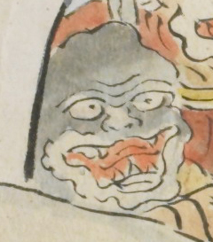

黒い顔の鬼。顔の色が黒く、額がひろい。大きく口を開いており、鋭い牙が3本はえている。目の間に皺がよっている。
出典：親書誌：U426_nichibunken_0079：酒天童子絵巻；シュテンドウジエマキ／日付：2006／資源識別子：U426_nichibunken_0079_0001_0014
Copyright (c)2010- International Research Center for Japanese Studies, Kyoto, Japan. All rights reserved.